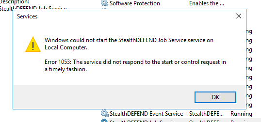

Issue: When FIPS-compliance is being enforced on the StealthDEFEND host it can prevent the Action Service and Job Service from starting:

You may see these .NET runtime errors in the Event Viewer:
Application: JobService.exe
Framework Version: v4.0.30319
Description: The process was terminated due to an unhandled exception.
Exception Info: System.InvalidOperationException
at System.Security.Cryptography.AesManaged..ctor()
at StealthDefend.Common.Aes256Managed.Decrypt(System.String)
at StealthDefend.Common.Database.ConnectionString(Microsoft.Extensions.Configuration.IConfiguration)
at JobService.Program+d__0.MoveNext()
at System.Runtime.ExceptionServices.ExceptionDispatchInfo.Throw()
at System.Runtime.CompilerServices.TaskAwaiter.HandleNonSuccessAndDebuggerNotification(System.Threading.Tasks.Task)
at JobService.Program.(System.String[])
Instructions: You can confirm that FIPS-compliance is being enforced using this script:
if((Get-ItemProperty -Path HKLM:\SYSTEM\CurrentControlSet\Control\Lsa\FipsAlgorithmPolicy).Enabled) {Write-Warning "FIPS is being enforced."} else {Write-Host "FIPS is not being enforced"}
To force the services to comply with FIPS, open the appsettings.common.json file of each
service that fails to start and change this:
"FIPS-Compliant": "False",
to this:
"FIPS-Compliant": "True",
Channel: Internal
Submitted by: Mike Olig
Product: SD
Affected Versions: 2.5+
KB Type: Known Issue